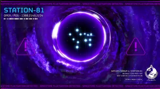

车站-81
车站-81 was a recently active 绝地潜兵 2 ARG, active between 2月 2025 and May 2025.
概述[edit | edit 来源]
On May 9th, 2025, a 频道 was opened in the 绝地潜兵 Discord called "S81-Satcom", linking to a YouTube livestream titled "车站 81 - 离线 [REBOOT]" as an ARG (alternate 现实 game). The community team on Discord also 已更改 their names to SATCOM 1-6. Each one throughout the ARG held useful information on getting 车站-81 back online and other 背景.
Booting 车站-81[edit | edit 来源]
Inside the Discord were 2 channels inside the 车站-81 类别. S81-Input and S81-Output. The 绝地潜兵 would 类型 combinations/codes into S81-Input and the S81-Output was for seeing what the script that ARROWHEAD was using to read these combinations outputted.
The first task started the first day, May 9th. The 绝地潜兵 were tasked with putting a password into the 车站 to start 维护, separated into blocks with 5 digits each. The community eventually figured out that on the community teams profile pictures were images of braille containing the code needed. The community now had access to the 4 stations, 车站-81,82,83, and 84. With 车站-81 being 离线.
Later that 下午, the community was tasked with aligning the antennas to the 3 stations that were online, 车站 82 83 and 84. The community had to 类型 either "Left" or "Right". Moving the 天线 by one degree in each 方向. This is similar to the radar sub-目标 in the actual game, but way slower. The first angle was in morse code, heard in an audio after the 摧毁 of 艾维斯. The rest of the antennas were brute forced. The completion of this task resulted in the completion of the first of 4 Datablocks.
The third task, or the 2nd Datablock, was started later that 傍晚 on May 9th. This task had the community input numbers into each of the stations. The community managers had 已更改 their profiles to new combinations, revealing to be the codes 必需 for completing the 2nd Datablock. Completing this resulted in calibration of the 2nd Datablock.
The 4th task, or 3rd Datablock, started the 下一个 day during noon on May 10th, 2025. The community was 必需 to adjust the 频率 on the 3 stations, once again based off of a sub-目标 in the actual game. It was quickly brute forced and the 3rd Datablock was calibrated.
Waiting for the 4th Datablock to open, the community was given 2 sub-tasks. The first was to decrypt a line of code on the livestream. While this was going on, the community team 已更改 once again, and their descriptions were 已更改 to an old Norse poem called Beowulf. After decrypting the code, the keyword was HEOROT.
The 2nd sub-task was done on the night of May 12th, 2025. The community was tasked with "re-synchronizing" the stations by playing a game similar to minesweeper. This took 5 hours due to griefers and severe lack of coordination.
The final Datablock was released in the 下午 of May 12th. Community was challenged with a minigame similar to the one in game where audience re-route E-710. This was done in 2-hours, after which there was one final task standing in their way: The community was to input a 33-character long 战略配备代码. This was done after a while, finally returning 车站-81 online.
时间线[edit | edit 来源]
The primary center for 车站-81 was a Youtube livestream (this livestream has now since been deleted).
车站-81 was in the 流程 of recalibrating four Datablocks. This has since been completed.
车站-81 went online on May 12th, 2025. It showed 超级地球 from outer space and orbited it for a while. You could see Meridia in space from this view and most people in the Discord found it quite anticlimactic.
Commands were entered into the #s81-input chat in the 官员 绝地潜兵 Discord server, which change the state of 车站-81.

光能者 fleet coming out of the Meridian Singularity shortly before going 离线. (May 13, 2025 at about 20:00 UTC.)
车站-81 has now gone 离线, and all channels 相关 to it in the Discord are closed. This was due to the 光能者 出现中 from the 默里迪恩奇点 (官员 clip here)